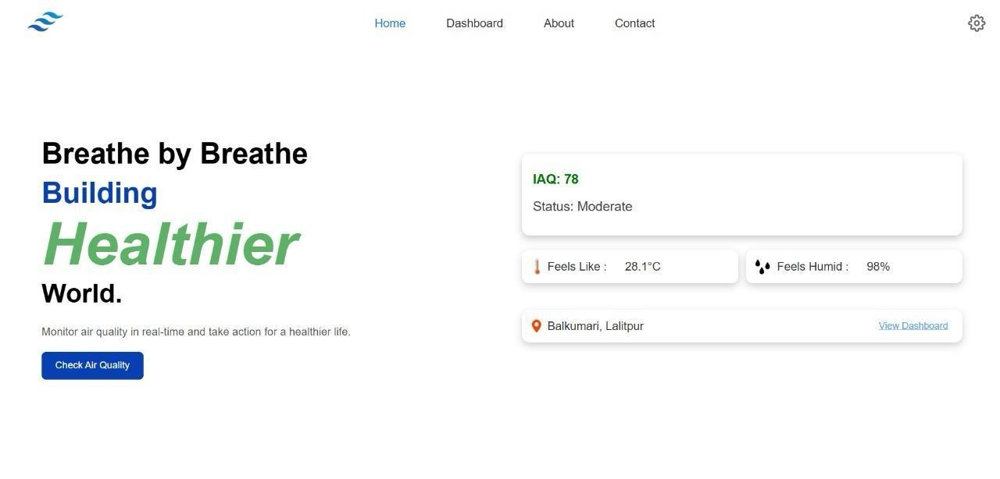
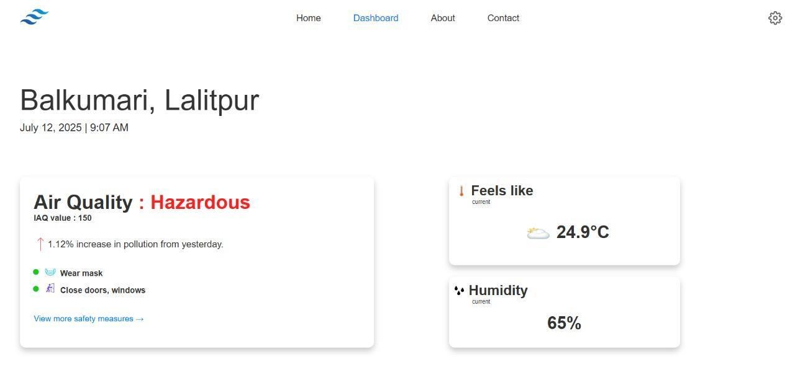
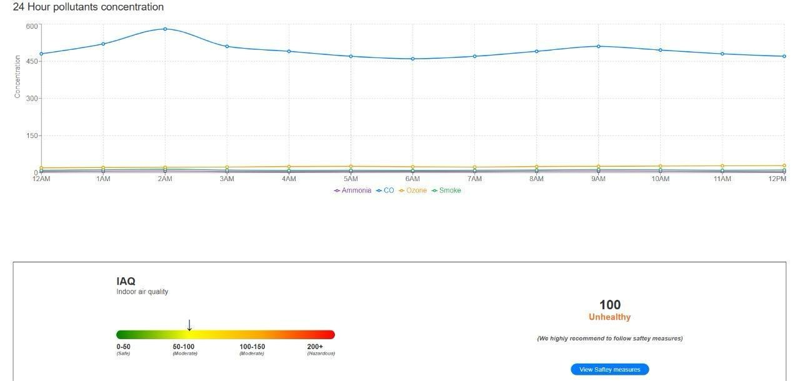
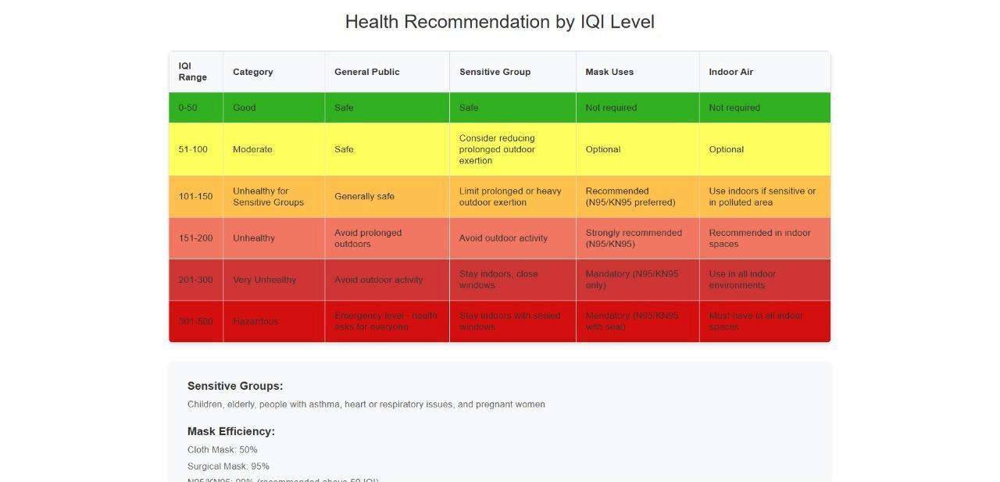
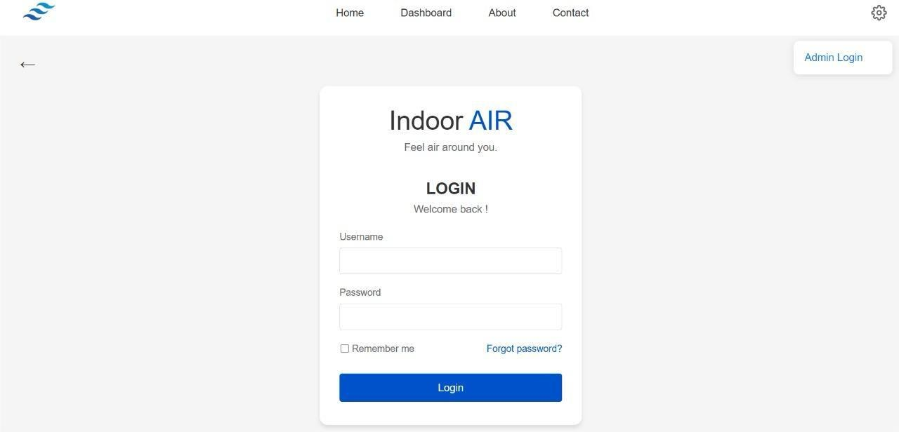

AQI
Indoor Air Quality Monitoring System: real-time IAQ value, dashboard and safety recommendations.

Overview
Indoor Air Quality Monitoring System (listed on my CV as "Indoor Air Quality System"; the app itself is branded "Indoor AIR"). It monitors the air quality of a place and shows a real-time indoor air quality (IAQ) value that represents the quality of the air people are breathing, then suggests safety measures based on pollutant levels.
The CV describes monitoring of temperature, humidity, carbon dioxide (CO₂) and particulate matter (PM2.5/PM10); the project's own About page describes IoT sensors collecting CO₂, ozone, SO₂ and smoke levels, and the app's 24-hour chart plots ammonia, CO, ozone and smoke. The aim is to detect pollutants, support healthy indoor environments, and provide real-time data for ventilation control and health protection.
It is a team college project, and Aatish Chaudhary is listed as a team member in the app. The project states its own limitation: it cannot measure every pollutant present in the air.
Features
- Dashboard showing the current IAQ value, an air-condition status (for example Hazardous), safety measures and a trend note
- Temperature ("feels like") and humidity readings with the location and date
- 24-hour pollutant concentration chart (ammonia, CO, ozone, smoke)
- IAQ gauge from Safe to Hazardous with a safety-measures button
- Health recommendation table by IAQ level: general public, sensitive groups, mask use and indoor air
- Health recommendation form: choose a health condition and receive guidance
- Contact and feedback form, plus a sensor page and About page
- Admin area behind a login with a dashboard, sensor configuration and a feedback review page
Technologies
Screenshots




Source & documentation status
This page is based on my CV, the public GitHub repository and screenshots of the running app. Two things to know:
- The repository contains the React front end. It calls a separate REST API (configured as
localhost:8080) whose source is not in the repository, so back-end and sensor-hardware details are not described here. - Values shown in the screenshots are those displayed when they were captured; they are not a claim about measurement accuracy.